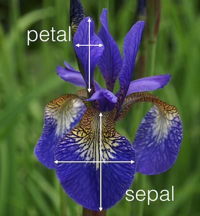
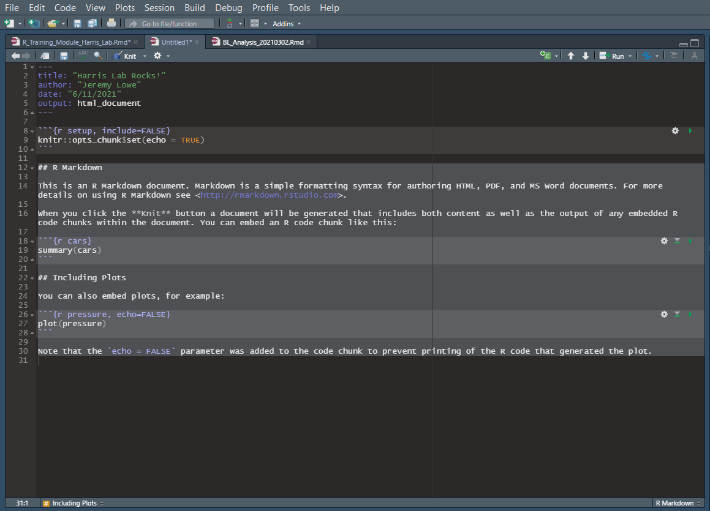
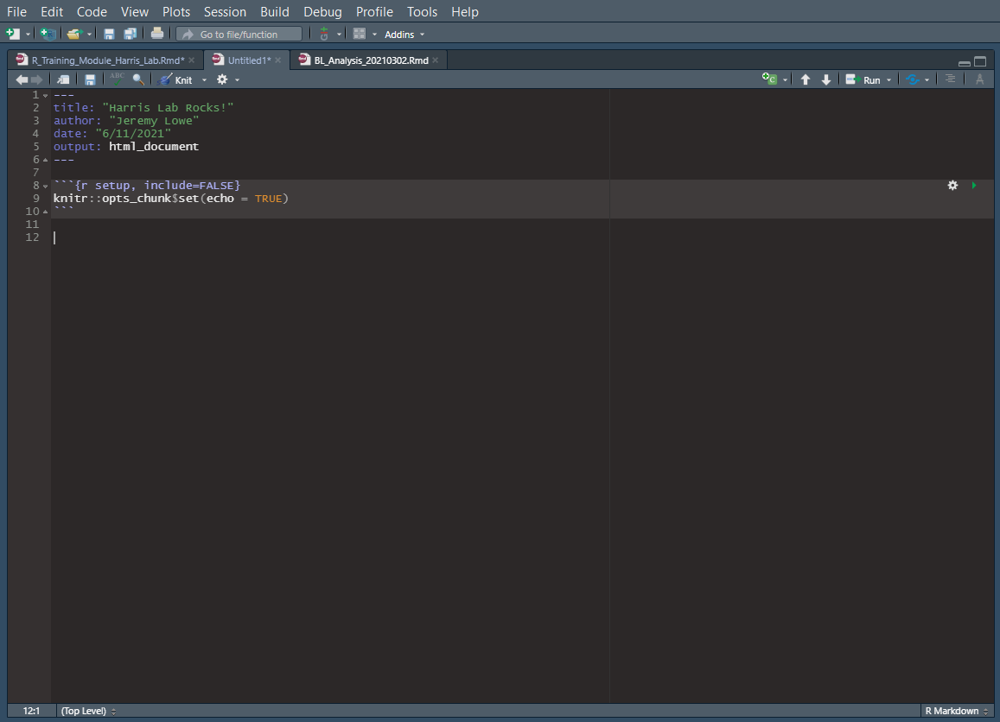
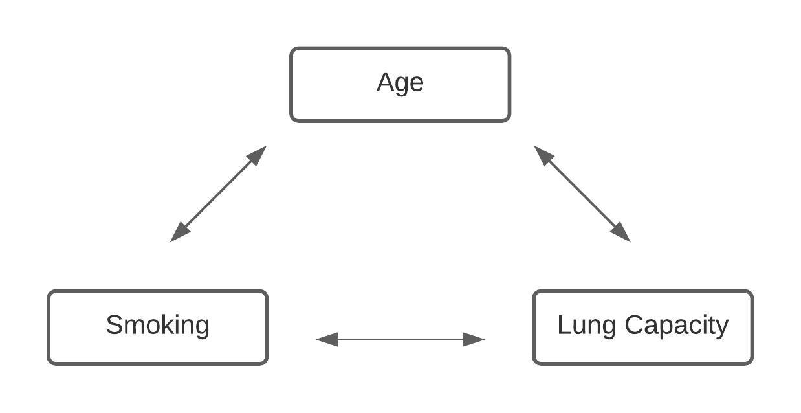

Harris Lab R Training Module
Jeremy Lowe
6/7/2021
 Image Credit: Allison Horst
Image Credit: Allison Horst
1 Introduction
This training module was created for the Harris Lab to aid in developing publication-ready figures, tables, and more. It assumes you have a basic knowledge of R including importing data, ‘tidying’ it, and basic analyses. It is by no means meant to reinvent the wheel when it comes to more detailed trainings (like the ones found in the R for Data Science textbook.) More general resources for the lab can also be found in the Harris Lab R Resources document.
For this small module, we will be using data from the Iris dataset, which is included in the Tidyverse package. The dataset actually contains data from a study conducted in 1936 by Ronald Fisher, so if you are interested in learning more, you can view it here. It contains measurements from three different irises that characterizes different dimensions for each. The image below gives you an idea of the data we’re looking at:

For later analyses in this tutorial, we will switch to using a practice dataset focused on respiratory health provided by Mike Marin of the University of British Columbia. This dataset presents information regarding lung capacity, age, smoker status, gender, and more. It is a wonderful dataset to apply some ideas health analyses to!
The code chunk below demonstrates how to load the data and other relevant packages into the environment:
# Loading in relevant packages, some of these will be used later
library(tidyverse)
library(table1)
library(kableExtra)
library(patchwork)
# Loading data into the environment
# You will likely use the read_csv() function in Tidyverse to load other datasets.
data(iris)
#Dataset provided by Mike Marin of University of British Columbia
lung_cap <- readr::read_csv('https://raw.githubusercontent.com/jlowe-git/Harris_Lab_R_Resources/main/LungCapData.csv')
# Take a peek at the data to see what we're working with!
head(iris)## Sepal.Length Sepal.Width Petal.Length Petal.Width Species
## 1 5.1 3.5 1.4 0.2 setosa
## 2 4.9 3.0 1.4 0.2 setosa
## 3 4.7 3.2 1.3 0.2 setosa
## 4 4.6 3.1 1.5 0.2 setosa
## 5 5.0 3.6 1.4 0.2 setosa
## 6 5.4 3.9 1.7 0.4 setosahead(lung_cap)## # A tibble: 6 x 6
## LungCap Age Height Smoke Gender Caesarean
## <dbl> <dbl> <dbl> <chr> <chr> <chr>
## 1 6.48 6 62.1 no male no
## 2 10.1 18 74.7 yes female no
## 3 9.55 16 69.7 no female yes
## 4 11.1 14 71 no male no
## 5 4.8 5 56.9 no male no
## 6 6.22 11 58.7 no female no
2 R Markdown
R Markdown is a literate programming file within RStudio that can take advantage of html formatting and more to produce amazing tables, visualizations, dashboards, reports, and more. It was used to create the document you are viewing right now as well! This tutorial relies on packages that make use of the html formatting in R Markdown, so it is recommended you use an R Markdown file when following along. A helpful tutorial on R Markdown can be found within Chapter 27 of the R for Data Science textbook linked in the previous section, but I will also walk through the basics in this section.
First, you will open an R Markdown file in the same manner you would a typical R source file in R Studio; simply go to File -> New File -> R Markdown. You will see the following prompt open:
R Markdown New File Prompt
On this page, you will see that you have the option to create an output in either html, pdf, or doc files types. For our purposes, we will be using the html output. If you have a need for another output version, there are helpful resources in Chapter 27 of the R for Data Science textbook!
After opening the new R Markdown file, you will notice the file is already populated with some code and text. This is the standard R Markdown template. You can delete everything I have highlighted below so your file looks relatively bare except for the header and chunk settings.

You can delete the highlighted portion to be left with:

Perfect! Now let’s walk through the structure of an R Markdown file…
First, the YAML (Yes Another Markdown Language) Header stores pertinent information regarding the file like author and title, as well as various options for how to generate the output. The output options can become much more complex and involve table of contents, CSS styling, and more. The sky is the limit for the number of options you can include in this header.
Next, you have the ability to change options for all of the code chunks. The ‘echo’ option allows you to either hide or display code chunks in your report output. Again, countless other options exist and can be explored in Chapter 27 of the R for Data Science textbook.
After the code chunk settings, I’ve written some general text. This text is just simple text, no code included. It can be used to organize ideas for yourself or your audience!
Next, the most important part. I’ve shown how to include a code chunk. The easiest way is to use the hotkey (CTRL + Alt + I) to ‘Insert’ the chunk. Code chunks are where you can include all of your code, and each chunk is compartmentalized. Each chunk has a title and settings included within the { } brackets.
Lastly, to generate the report, you want to ‘knit’ the R Markdown file. Knitting everything converts your R Markdown document into a neatly formatted html report! You’ll want to make sure you have the knitr package downloaded prior to attempting to knit your document. To knit, simply click the small ‘knit’ button located at the top of the file. If everything is right, it should generate an html file in the same file storage as your R Markdown document and open the html file automatically. Let’s take a look at the example shown!
And that’s the quick crash course on R Markdown. Once you become handy with R Markdown, you’ll realize how many doors it opens to seamlessly generate code and formatted figures, tables, and more.
3 Tables
For any data analysis, being able to calculate descriptive statistics and represent them in a table is a must. This section will walk you through the Table1 package, a useful tool in representing descriptive statistics across several variables, as well as Kable, included in the Knitr package, which offers abilities to transform dataframes/tibbles into well-formatted and meaningful tables. Just to reiterate, you should be working within an R Markdown file to create an html output; regular R source files will not do the trick.
First, with our Iris dataset, we’re interested to learn about some of the measures of central tendency (mean, median, standard deviation, etc.) of the provided data. We have variables representing the sepal length and width, petal length and width, and the species of Iris.
3.1 Table1
To get a quick view at descriptive statistics, we’ll use the following code and the Table1 package.
# First, I need to ensure my variables are the right data type.
str(iris)## 'data.frame': 150 obs. of 5 variables:
## $ Sepal.Length: num 5.1 4.9 4.7 4.6 5 5.4 4.6 5 4.4 4.9 ...
## $ Sepal.Width : num 3.5 3 3.2 3.1 3.6 3.9 3.4 3.4 2.9 3.1 ...
## $ Petal.Length: num 1.4 1.4 1.3 1.5 1.4 1.7 1.4 1.5 1.4 1.5 ...
## $ Petal.Width : num 0.2 0.2 0.2 0.2 0.2 0.4 0.3 0.2 0.2 0.1 ...
## $ Species : Factor w/ 3 levels "setosa","versicolor",..: 1 1 1 1 1 1 1 1 1 1 ...# Based on the 'structure' function above, I see I have 4 numeric variables and 1 factor variable, which is exactly what I need.
# Often, categorical data is represented as a character data type, but table1 prefers factor data types
# To change characters to factors, I could use the following code:
# iris$Species <- factor(iris$Species)
# Creating basic table using table1 function
# Note: The variables I'm interested in are included in a 'formula' input:
# ~ Sepal.Length + Sepal.Width + Petal.Length + Petal.Width
# All variables you want to calculate descriptive stats for are used in the table1() function this way
table1(~ Sepal.Length + Sepal.Width + Petal.Length + Petal.Width + Species, data = iris)| Overall (N=150) |
|
|---|---|
| Sepal.Length | |
| Mean (SD) | 5.84 (0.828) |
| Median [Min, Max] | 5.80 [4.30, 7.90] |
| Sepal.Width | |
| Mean (SD) | 3.06 (0.436) |
| Median [Min, Max] | 3.00 [2.00, 4.40] |
| Petal.Length | |
| Mean (SD) | 3.76 (1.77) |
| Median [Min, Max] | 4.35 [1.00, 6.90] |
| Petal.Width | |
| Mean (SD) | 1.20 (0.762) |
| Median [Min, Max] | 1.30 [0.100, 2.50] |
| Species | |
| setosa | 50.0 (33.3%) |
| versicolor | 50.0 (33.3%) |
| virginica | 50.0 (33.3%) |
Looks good! However, there are many more ways to customize the table1 output. For one, to gain some more meaningful insights, I could stratify my numerical data over the 3 species of Irises. Let’s say I am also interested in making this more publication ready, which means I need to change how my variable names appear in the table. Doing so would use the following code:
# Adjusting the display of variable names
label(iris$Sepal.Length) <- "Sepal Length"
label(iris$Sepal.Width) <- "Sepal Width"
label(iris$Petal.Length) <- "Petal Length"
label(iris$Petal.Width) <- "Petal Width"
# Adjusting factor display names for each species
iris$Species <- fct_recode(iris$Species,
"Setosa" = "setosa",
"Versicolor" = "versicolor",
"Virginica" = "virginica"
)
# table1 output stratified by Iris species
table1(~ Sepal.Length + Sepal.Width + Petal.Length + Petal.Width | Species, data = iris)| Setosa (N=50) |
Versicolor (N=50) |
Virginica (N=50) |
Overall (N=150) |
|
|---|---|---|---|---|
| Sepal Length | ||||
| Mean (SD) | 5.01 (0.352) | 5.94 (0.516) | 6.59 (0.636) | 5.84 (0.828) |
| Median [Min, Max] | 5.00 [4.30, 5.80] | 5.90 [4.90, 7.00] | 6.50 [4.90, 7.90] | 5.80 [4.30, 7.90] |
| Sepal Width | ||||
| Mean (SD) | 3.43 (0.379) | 2.77 (0.314) | 2.97 (0.322) | 3.06 (0.436) |
| Median [Min, Max] | 3.40 [2.30, 4.40] | 2.80 [2.00, 3.40] | 3.00 [2.20, 3.80] | 3.00 [2.00, 4.40] |
| Petal Length | ||||
| Mean (SD) | 1.46 (0.174) | 4.26 (0.470) | 5.55 (0.552) | 3.76 (1.77) |
| Median [Min, Max] | 1.50 [1.00, 1.90] | 4.35 [3.00, 5.10] | 5.55 [4.50, 6.90] | 4.35 [1.00, 6.90] |
| Petal Width | ||||
| Mean (SD) | 0.246 (0.105) | 1.33 (0.198) | 2.03 (0.275) | 1.20 (0.762) |
| Median [Min, Max] | 0.200 [0.100, 0.600] | 1.30 [1.00, 1.80] | 2.00 [1.40, 2.50] | 1.30 [0.100, 2.50] |
Nice! We can begin to see some of the differences across the different types of species and the table looks great.
Next, let’s take a look at the descriptive statistics of our respiratory health dataset. To do so, we will be using Table1 again.
# Adjusting the name of one variable
label(lung_cap$LungCap) <- "Lung Capacity"
# We need to turn some variables from character data types into factor data types
lung_cap$Smoke <- factor(lung_cap$Smoke)
lung_cap$Gender <- factor(lung_cap$Gender)
lung_cap$Caesarean <- factor(lung_cap$Caesarean)
# Next, we will represent it in Table1 and stratify by gender
table1(~ LungCap + Age + Height + Smoke + Caesarean | Gender, data = lung_cap)| female (N=358) |
male (N=367) |
Overall (N=725) |
|
|---|---|---|---|
| Lung Capacity | |||
| Mean (SD) | 7.41 (2.56) | 8.31 (2.68) | 7.86 (2.66) |
| Median [Min, Max] | 7.75 [0.507, 13.1] | 8.35 [1.18, 14.7] | 8.00 [0.507, 14.7] |
| Age | |||
| Mean (SD) | 12.4 (3.96) | 12.2 (4.05) | 12.3 (4.00) |
| Median [Min, Max] | 13.0 [3.00, 19.0] | 12.0 [3.00, 19.0] | 13.0 [3.00, 19.0] |
| Height | |||
| Mean (SD) | 63.8 (7.03) | 65.8 (7.24) | 64.8 (7.20) |
| Median [Min, Max] | 64.4 [45.3, 79.8] | 66.1 [47.8, 81.8] | 65.4 [45.3, 81.8] |
| Smoke | |||
| no | 314 (87.7%) | 334 (91.0%) | 648 (89.4%) |
| yes | 44.0 (12.3%) | 33.0 (9.0%) | 77.0 (10.6%) |
| Caesarean | |||
| no | 279 (77.9%) | 282 (76.8%) | 561 (77.4%) |
| yes | 79.0 (22.1%) | 85.0 (23.2%) | 164 (22.6%) |
What I’ve shown here just scratches the surface of Table1, and I recommend checking out the documentation to see more of what it is capable of.
3.2 Kable
The kbl() function is included in the knitr package and provides the ability to transform dataframes/tibbles into html formatted tables. It is perfect for developing tables that are easily readable for publications, presentations, reports, etc.
Say we want to represent the descriptive statistics again, but this time using kbl(). To do so, we could use the following code:
# Creating descriptive statistics
iris_kable <- group_by(iris, Species) %>%
summarise(
Count = n(),
"Sepal Width Mean" = mean(Sepal.Width, na.rm = TRUE),
"Sepal Width SD" = sd(Sepal.Width, na.rm = TRUE),
"Petal Width Mean" = mean(Petal.Width, na.rm = TRUE),
"Petal Width SD" = sd(Petal.Width, na.rm = TRUE),
"Sepal Length Mean" = mean(Sepal.Length, na.rm = TRUE),
"Sepal Length SD" = sd(Sepal.Length, na.rm = TRUE),
"Petal Length Mean" = mean(Petal.Length, na.rm = TRUE),
"Petal Length SD" = sd(Petal.Length, na.rm = TRUE),
)
# Representing in a Kable
iris_kable %>%
kbl() %>%
add_header_above(c("Descriptive Statistics of Iris Species (N = 150)" = 10)) %>%
kable_styling(bootstrap_options = c("striped", "condensed"), full_width = F, font_size = 12)| Species | Count | Sepal Width Mean | Sepal Width SD | Petal Width Mean | Petal Width SD | Sepal Length Mean | Sepal Length SD | Petal Length Mean | Petal Length SD |
|---|---|---|---|---|---|---|---|---|---|
| Setosa | 50 | 3.428 | 0.3790644 | 0.246 | 0.1053856 | 5.006 | 0.3524897 | 1.462 | 0.1736640 |
| Versicolor | 50 | 2.770 | 0.3137983 | 1.326 | 0.1977527 | 5.936 | 0.5161711 | 4.260 | 0.4699110 |
| Virginica | 50 | 2.974 | 0.3224966 | 2.026 | 0.2746501 | 6.588 | 0.6358796 | 5.552 | 0.5518947 |
As you can see, we are able to represent the descriptive statistics in a well-formatted table. Table1 still might be the better package for descrptive statistics in this case, but this serves as a good example of what Kable is capable of!
Another table you will likely find yourself needing to create are contingency tables (also known as cross-tabulations). In environmental health research, we are often wanting to compare different groups of participants based on outcomes or characteristics. Kable offers a quick way to create cross-tabulations across several variables!
For our example, we will create a new binary variable to represent if the iris has a sepal width that is below (coded as 0) or above (coded as 1) the median value overall across the 150 samples. After this new variable is created, we will create a cross-tabulation to gain understanding into which species has the greatest number with an above-median sepal width. This could be a quick way to infer how species correlates to sepal width.
# Creating new binary variable to represent if an iris has an above/below median sepal width
sepal_width_median <- median(iris$Sepal.Width)
iris <- mutate(iris, Sepal.Width.Median = if_else(iris$Sepal.Width < sepal_width_median, "Below Median", "Above Median"))
# Creating a cross-tab representation of the species of irises and if they have an above or below median sepal width
#First, creating a small dataframe with the variables of interest
iris_kable <- iris%>%
select(Species, Sepal.Width.Median)
#Changing the variable names to be more meaningful
names(iris_kable) <- c("Species", "Above/Below Median Sepal Width")
#Next, creating the cross-tab using kable
iris_kable%>%
group_by(Species, `Above/Below Median Sepal Width`)%>%
summarize(n=n())%>%
spread(Species, n)%>%
kable()%>%
add_header_above(c(" " = 1, "Species" = 3))%>%
add_header_above(c("Cross-tabulation of Iris Species and sepal Width (N = 150)" = 4))%>%
kable_styling(bootstrap_options = c("condensed"), full_width = F, font_size = 12)| Above/Below Median Sepal Width | Setosa | Versicolor | Virginica |
|---|---|---|---|
| Above Median | 48 | 16 | 29 |
| Below Median | 2 | 34 | 21 |
From the cross-tabulation, we can see that the Setosa species has the greatest number of irises with a sepal width greater than the median. This cross-tabulation could help inform future statistical analyses to determine if there are any relationships between species and iris size.
Everything I have shown you thus far is a practical application of how to create tables in R Markdown. There is much more you can do than this and I encourage you to explore! Kable has many more opportunities to create custom tables through the KableExtra package. Any time you have results from analyses (i.e. regression models, etc.), consider representing them in a Kable!
4 Data Visualization with ggplot2
R offers countless ways to create unique data visualizations. For our Iris dataset, it would be interesting to be able to expand upon our previous cross-tabulation to get a sense of how all of the dimensions of each species compares to one another. A straightforward way to do this would be to look at the distributions of dimensions for each species of Iris through box plots.
The following code makes use of the ggplot2 package that is included in the Tidyverse. The ggplot2 package offers incredibly useful tools to create data visualizations that go way beyond what basic R is capable of. An additional resource that contains more specific information on ggplot2 can be found here.
When working with ggplot2, you can imagine working with a recipe. Each ingredient, or layer, that you add to your plot will create something new until you have your final product. The code belows demonstrates a variety of ways to use these layers to create a beautiful final product!
#For this first step, we are simply sending our dataset to a ggplot2 object
plot_1 <- iris%>%
ggplot() +
#Above, you will notice I used the + symbol.
#The + symbol is how we add each layer to another!
#Now, we will create our boxplot layer
geom_boxplot(aes(x = Species, y=Sepal.Width)) +
#Next, we will add labels to each axis
labs(x = "Species",
y = "Sepal Width (cm)") +
#Finally, we want to make it look pretty, so we'll add a theme
theme_bw()
#We will now replicate the same plot for our other 3 measurements.
plot_2 <- iris%>%
ggplot() +
geom_boxplot(aes(x = Species, y=Sepal.Length)) +
labs(x = "Species",
y = "Sepal Length (cm)") +
theme_bw()
plot_3 <- iris%>%
ggplot() +
geom_boxplot(aes(x = Species, y=Petal.Width)) +
labs(x = "Species",
y = "Petal Width (cm)") +
theme_bw()
plot_4 <- iris%>%
ggplot() +
geom_boxplot(aes(x = Species, y=Petal.Length)) +
labs(x = "Species",
y = "Petal Length (cm)") +
theme_bw()
#Instead of having 4 individual figures, it'd be more helpful to represent them in 1.
#We will do so using the patchwork package.
#The patchwork package is helpful for combining ggplot2 objects into 1!
library(patchwork)
#Patchwork can be expanded upon to create some really unique visualizations,
#so be sure to look more into it!
plot_1 + plot_2 + plot_3 + plot_4 + plot_annotation(title = "Petal and Sepal Characteristics of Irises") 
Again, there are various geoms (or plot types) that can be used with ggplot2; it is all a matter of finding the right one to represent your data! This section of the tutorial was meant to give you an overview of ggplot, but we will continue to explore some of these other geoms alongside some of our analyses.
5 Bivariate Data Analysis
With bivariate data analysis, we will be doing as the name says: analyzing the relationship between two variables. Below, I will present examples using ANOVA, Pearson’s Correlation, Pearson’s Chi-squared Test, McNemar Test, Student’s t Test, and Fisher’s Exact Test. The test you will use for your data depends on the type of data you have, and more information on how to choose the right statistical test can be found here. Let’s try some examples.
5.1 ANOVA
Now say we are interested in determining if there is a difference in size of the sepal among different species. To do so, we will be using a one-way ANOVA. . The additional key assumptions for a one-way ANOVA are that the samples are independent of each other and randomly chosen, and that the dependent variable (in our case, sepal width or height) is normally distributed. At a basic level, a histogram can allow us to ‘eyeball’ it, but there are more rigorous statistical tests out there to determine normality. See the code below for how to create a basic histogram using the ggplot2 package:
# Creating histogram of sepal width variable
plot_1 <- iris %>%
ggplot() +
geom_histogram(aes(y = Sepal.Width), binwidth = 0.1) +
coord_flip() +
labs(
title = "Sepal Width",
y = "Sepal Width (cm)",
x = "Frequency"
) +
theme_bw()
plot_1
As we can see, the data are fairly normally distributed, so we can feel more confident about using the one-way ANOVA to compare sepal width across species. Upon obtaining results though, we will want to represent them in a formatted table using the power of Kable so it can be shared to an audience. See the following code for how to do so:
# Conducting one-way ANOVA and storing model for later formatting
anova_results <- aov(data = iris, Sepal.Width ~ Species)
# The summary() function creates a crude output
summary(anova_results)## Df Sum Sq Mean Sq F value Pr(>F)
## Species 2 11.35 5.672 49.16 <2e-16 ***
## Residuals 147 16.96 0.115
## ---
## Signif. codes: 0 '***' 0.001 '**' 0.01 '*' 0.05 '.' 0.1 ' ' 1As we can see from the ANOVA results, there is a statistically significant (P < 0.05) relationship between Iris species and sepal width! Using tools from Kable or ggplot2, we can decide to represent these results further to better communicate this relationship and its magnitude of effect.
5.2 Pearson’s Correlation (Pearson’s r)
Pearson’s Correlation is one of the most widely used statistical tests and it is used to compare two normally distributed continuous variables. In our case, we are interested in understanding if there is a correlation between petal and sepal length for each species of iris. To do so, we will filter for each species type and run Pearson’s Correlation.
# Filtering for each type of iris
setosa <- iris%>%
filter(Species == "Setosa")
versicolor <- iris%>%
filter(Species == "Versicolor")
virginica <- iris%>%
filter(Species == "Virginica")
# Running Pearson's Correlation for each type of iris
setosa_r <- cor.test(setosa$Petal.Length, setosa$Sepal.Length)
versicolor_r <- cor.test(versicolor$Petal.Length, versicolor$Sepal.Length)
virginica_r <- cor.test(virginica$Petal.Length, virginica$Sepal.Length)
#Viewing results
setosa_r##
## Pearson's product-moment correlation
##
## data: setosa$Petal.Length and setosa$Sepal.Length
## t = 1.9209, df = 48, p-value = 0.0607
## alternative hypothesis: true correlation is not equal to 0
## 95 percent confidence interval:
## -0.01206954 0.50776233
## sample estimates:
## cor
## 0.2671758versicolor_r##
## Pearson's product-moment correlation
##
## data: versicolor$Petal.Length and versicolor$Sepal.Length
## t = 7.9538, df = 48, p-value = 2.586e-10
## alternative hypothesis: true correlation is not equal to 0
## 95 percent confidence interval:
## 0.6020680 0.8532995
## sample estimates:
## cor
## 0.754049virginica_r##
## Pearson's product-moment correlation
##
## data: virginica$Petal.Length and virginica$Sepal.Length
## t = 11.901, df = 48, p-value = 6.298e-16
## alternative hypothesis: true correlation is not equal to 0
## 95 percent confidence interval:
## 0.7714542 0.9210172
## sample estimates:
## cor
## 0.8642247
As we can see, Versicolor and Virginica species had a significant positive correlation (P < 0.05) between sepal and petal length, whereas Setosa did not (P > 0.05)
Let’s take a look at these correlations using ggplot2!
iris%>%
ggplot(aes(x = Petal.Length, y = Sepal.Length, color = Species))+
geom_point() +
geom_smooth(method = 'lm', se = FALSE)+
theme_bw() +
labs(x = "Petal Length (cm)",
y = "Sepal Length (cm)",
title = "Correlation Between Petal and Sepal Lengths for Iris Species",
color = "Species")
Next, let’s take a look at our respiratory health dataset. In particular, we want to understand if there is a correlation between lung capacity and age using Pearson’s correlation. To do so, we will use the following code:
#Pearson's Correlation
cor.test(lung_cap$Age, lung_cap$LungCap)##
## Pearson's product-moment correlation
##
## data: lung_cap$Age and lung_cap$LungCap
## t = 38.476, df = 723, p-value < 2.2e-16
## alternative hypothesis: true correlation is not equal to 0
## 95 percent confidence interval:
## 0.7942660 0.8422217
## sample estimates:
## cor
## 0.8196749#Point plot displaying the significant correlation
lung_cap%>%
ggplot(aes(x = Age, y = LungCap))+
geom_point() +
geom_smooth(method = 'lm', se = FALSE)+
theme_bw() +
labs(x = "Age (years)",
y = "Lung Capacity",
title = "Correlation Between Age and Lung Capacity")
Based on Pearson’s Correlation, there is a significant positive correlation between age and lung capacity (r = 0.82, P < 0.05).
5.3 Pearson’s Chi-squared Test
Pearson’s Chi-squared Test are useful in determining relationships between two categorical variables with any number of levels. In this example, we will be looking at the relationship between species and above/below median sepal width, just as we displayed in the cross-tabulation in an earlier example!
#Displaying cross-tab that was developed in an earlier example
iris_kable%>%
group_by(Species, `Above/Below Median Sepal Width`)%>%
summarize(n=n())%>%
spread(Species, n)%>%
kable()%>%
add_header_above(c(" " = 1, "Species" = 3))%>%
add_header_above(c("Cross-tabulation of Iris Species and sepal Width (N = 150)" = 4))%>%
kable_styling(bootstrap_options = c("condensed"), full_width = F, font_size = 12)## `summarise()` has grouped output by 'Species'. You can override using the `.groups` argument.| Above/Below Median Sepal Width | Setosa | Versicolor | Virginica |
|---|---|---|---|
| Above Median | 48 | 16 | 29 |
| Below Median | 2 | 34 | 21 |
#Running chi-squared test
chisq.test(x = iris$Species, y = iris$Sepal.Width.Median)##
## Pearson's Chi-squared test
##
## data: iris$Species and iris$Sepal.Width.Median
## X-squared = 43.973, df = 2, p-value = 2.828e-10
As we can see, the type of species is significantly associated with having above/below median sepal width (P < 0.05). To gain more insight on the direction of effect, we can look at the cross-tab. We can see that 96% (48 out of 50) of Setosa Irises, 32% (16 out of 50) of Versicolor Irises, and 58% (29 out of 50) Virginica Irises have above median sepal widths. This association suggests that Setosa Irises have the largest sepal widths of the three species.
5.4 McNemar Test
The McNemar Test is similar to chi-squared tests in that it is used on two categorical variables, except the categorical variables can only have 2 levels and the test is used for paired data. In an epidemiological sense, paired data means a measurement of an outcome is taken multiple times from the same participant or location. An example of this would be tracking the height or prevalence of diarrhea of children longitudinally. Sadly, in our case, we are not working with paired data, but I will still show example code for how to run the test in case you find yourself needing it.
#In this case, mcnemar.test() function requires that we input two variables that contain factor data:
# mcnemar.test(x = data$x_variable, y = data$y_variable, correct = TRUE)
# Uncomment the line above to use the mcnemar.test() function elsewhere.
5.5 Student’s t Test
At this point, we have used our Iris dataset to its fullest capacity, and it is time to switch things up. We will now be using our respiratory health dataset, lung_cap, for the remainder of the tutorial.
After looking at descriptive statistics, we will want to use a bivariate correlation test to understand if there are any associations between our variables of interest. The t test is helpful in determining if there are any statistically significant differences in means between two groups. The t test requires that we input one continuous variable and one categorical variable with two levels. Let’s compare the lung capacity of smokers versus nonsmokers.
#Running t test example
t.test(LungCap ~ Smoke, data = lung_cap, paired = FALSE)##
## Welch Two Sample t-test
##
## data: LungCap by Smoke
## t = -3.6498, df = 117.72, p-value = 0.0003927
## alternative hypothesis: true difference in means is not equal to 0
## 95 percent confidence interval:
## -1.3501778 -0.4003548
## sample estimates:
## mean in group no mean in group yes
## 7.770188 8.645455
There is a significant difference in mean lung capacity between smokers and nonsmokers (P < 0.05), in which smokers have greater mean lung capacity. However, this is a simple bivariate correlation and could be confounded by other variables. Particularly, we know age could be a confounding since our age range is only 3-19 and smoking is a habit usually developed later in life. Typically, smoking can hurt lung capacity, but in our case, it may be a better indication of age. Let’s check if smoking is associated to age using another t test.
#Running t test example
t.test(Age ~ Smoke, data = lung_cap, paired = FALSE)##
## Welch Two Sample t-test
##
## data: Age by Smoke
## t = -8.0803, df = 123.33, p-value = 5.023e-13
## alternative hypothesis: true difference in means is not equal to 0
## 95 percent confidence interval:
## -3.415842 -2.071612
## sample estimates:
## mean in group no mean in group yes
## 12.03549 14.77922
Based on the result of the t test, we can see a significant difference in age between smokers and nonsmokers (P < 0.05). This confirms our hypothesis that age is also associated with smoking. We will take a look later at how the effect of this confounding relationship can be controlled for using regression analyses.
One additional note for t tests; we can also run a paired t test if the data meets meets the criteria. This is similar to how the McNemar Test requires paired data to be run. If our data includes multiple observations of one participant/location/item/etc, then a paired t test is needed. To do so, you would simply change the ‘paired’ option in the function to = TRUE.
5.6 Fisher’s Exact Test
Fisher’s exact test is similar to Pearson’s chi-squared test in that it is a comparison between two categorical variables, except Fisher’s exact test is used more appropriate for small sample sizes. A general rule of thumb is that Fisher’s exact test should be used when one of the frequencies of a 2x2 cross-tab is < 5. Again, our example data does not meet this criteria for Fisher’s Exact Test, but example code is provided below.
# Fisher's Exact Test Example Code
# fisher.test(x = data$x_variable, y = data$y_variable)
#Uncomment the line above to use the fisher.test() function.
6 Regression Models
In global health research, we often want to see the effect of multiple variables on one outcome of interest through the use of regression models. Regression models can be very helpful in understanding the social determinants of certain outcomes, evaluating intervention impacts, and controlling for confounding by including potential confounders in the model. For this section, we will be relying upon the data from our respiratory health dataset, lung_cap.
6.1 A Note on Confounding
As we discussed in the previous section, we believe there to be confounding between age and smoker status when determining their effects on lung capacity. For confounding to exist, three criteria must be met:
- The confounding variable must have an association with the outcome of interest.
- The confounding variable must have an association with the exposure of interest.
- The confounding variable must not be dependent on the exposure. Another way to consider this is that it must not be in the causal pathway between the exposure and outcome. This would be instead called a mediator.
As we made note in the bivariate analysis section, we believe age could be a confounder in the relationship between smoking and lung capacity based on the age range of our sample. The figure below displays the relationship at hand:

To understand this further and control for the effect of confounding, we will use simple linear regression and multiple linear regression models.
6.2 Linear Regression
6.2.1 Simple Linear Regression
Similar to how we used Pearson’s Correlation to understand the relationship between age and lung capacity, we can do so again with simple linear regression. Simple linear regression compares two continuous variables in a similar manner. The code for doing so is below:
#Simple linear regression model
lm_results <- lm(LungCap ~ Age, data = lung_cap)
#Displaying summary of results
summary(lm_results)##
## Call:
## lm(formula = LungCap ~ Age, data = lung_cap)
##
## Residuals:
## Min 1Q Median 3Q Max
## -4.7799 -1.0203 -0.0005 0.9789 4.2650
##
## Coefficients:
## Estimate Std. Error t value Pr(>|t|)
## (Intercept) 1.14686 0.18353 6.249 7.06e-10 ***
## Age 0.54485 0.01416 38.476 < 2e-16 ***
## ---
## Signif. codes: 0 '***' 0.001 '**' 0.01 '*' 0.05 '.' 0.1 ' ' 1
##
## Residual standard error: 1.526 on 723 degrees of freedom
## Multiple R-squared: 0.6719, Adjusted R-squared: 0.6714
## F-statistic: 1480 on 1 and 723 DF, p-value: < 2.2e-16
We can see the correlation coefficient for age this time is only r = 0.54, as compared to r = 0.82 when we originally ran Pearson’s r Correlation. This is because the linear model is now accounting for the intercept at 1.15, as opposed to 0, so the slope is decreased.
The final linear model can be read as: Lung Capacity = 1.15 + 0.54 * (Age)
Similarly, we can run simple linear regression with a continuous variable as the output and a categorical variable as the covariate. Let’s look into the relationship between smoking and lung capacity now.
#Simple linear regression model, this time with smoking as the covariate of interest
lm_results <- lm(LungCap ~ Smoke, data = lung_cap)
#Displaying summary of results
summary(lm_results)##
## Call:
## lm(formula = LungCap ~ Smoke, data = lung_cap)
##
## Residuals:
## Min 1Q Median 3Q Max
## -7.2632 -1.7202 0.1048 1.9048 6.9048
##
## Coefficients:
## Estimate Std. Error t value Pr(>|t|)
## (Intercept) 7.7702 0.1041 74.64 <2e-16 ***
## Smokeyes 0.8753 0.3194 2.74 0.0063 **
## ---
## Signif. codes: 0 '***' 0.001 '**' 0.01 '*' 0.05 '.' 0.1 ' ' 1
##
## Residual standard error: 2.65 on 723 degrees of freedom
## Multiple R-squared: 0.01028, Adjusted R-squared: 0.008908
## F-statistic: 7.507 on 1 and 723 DF, p-value: 0.006297
As we suspected, there is a similar relationship. However, we interpret the results slightly differently. Since smoking was a categorical variable, we now have an instance where a variable was ‘dummy’ coded with a reference category. This means that the model is comparing those who smoke to a reference category of those who do not smoke. ‘Dummy’ primarily comes in handy when you have a categorical variable with 3 or more options.
Our final model now takes the format: Lung Capacity = 7.77 + 0.88 * (Smoker)
If a person smokes, then ‘Smoker’ is equal to 1 and the lung capacity is 8.65, which is also the average lung capacity of all smokers. If a person does not smoke, then ‘Smoker’ is equal to 0 and the lung capacity is 7.77, which is also the average lung capacity of all non-smokers.
However, given the current state of medical research, smoking should not increase one’s lung capacity. To understand this confounding relationship between age and smoking, we will use multiple linear regression.
6.2.2 Multiple Linear Regression
Again, we suspect there to be a confounding relationship between age and smoking status, so to help control for this we will be using multiple linear regression. Our outcome of interest, lung capacity, is still a continuous variable, but with multiple linear regression we will be including age and smoking status as covariates in the model. Additionally, since we know age and smoking status to already be correlated, we will be testing for multicollinearity in our regression model using variance inflation factors. The following code shows how to do so and displays our results:
#Multiple linear regression model
lm_results <- lm(LungCap ~ Age + Smoke, data = lung_cap)
#Displaying summary of results
summary(lm_results)##
## Call:
## lm(formula = LungCap ~ Age + Smoke, data = lung_cap)
##
## Residuals:
## Min 1Q Median 3Q Max
## -4.8559 -1.0289 -0.0363 1.0083 4.1995
##
## Coefficients:
## Estimate Std. Error t value Pr(>|t|)
## (Intercept) 1.08572 0.18299 5.933 4.61e-09 ***
## Age 0.55540 0.01438 38.628 < 2e-16 ***
## Smokeyes -0.64859 0.18676 -3.473 0.000546 ***
## ---
## Signif. codes: 0 '***' 0.001 '**' 0.01 '*' 0.05 '.' 0.1 ' ' 1
##
## Residual standard error: 1.514 on 722 degrees of freedom
## Multiple R-squared: 0.6773, Adjusted R-squared: 0.6764
## F-statistic: 757.5 on 2 and 722 DF, p-value: < 2.2e-16#Determining variance inflation factors (VIF) to understand multicollinearity
car::vif(lm_results)## Age Smoke
## 1.046703 1.046703
Interesting results! First, we see that age and smoking are still significantly associated with lung capacity (P < 0.05), but there is now a negative effect from smoking. Controlling for age, we can see now that being a smoker leads to an average 0.65 decrease in lung capacity. This contradicts our earlier relationship we were witnessing from bivariate correlation tests where being a smoker seemed to increase lung capacity, but now we know that age is an important confounder since it switches the direction of effect.
Multicollinearity can skew the results of a regression model, but since our variance inflation factors are close to 1, this is not a concern in this instance.
6.3 Logistic Regression
Not all outcomes of interest will be continuous variables like lung capacity. Often, we will be working with binary outcomes like child mortality or diarrheal prevalence. Logistic regression models are useful in scenarios where an outcome is binary. However, unlike linear regression models, the coefficients of the model are actually log-transformed odds ratios. More information on odds ratios can be found here. We will have the added step of converting them from being log-transformed this time.
In this example, let’s explore some of the determinants of smoking. It is important to note that our example dataset is lacking several other important determinants of smoking like wealth and education, so this example (and every other for that matter) should only be used for educational purposes.
#First, we need to change the factor levels to a binary 0 (nonsmoker) or 1 (smoker)
lung_cap$Smoke <- fct_recode(lung_cap$Smoke,
"0" = "no",
"1" = "yes"
)
#Logistic regression model
log_results <- glm(Smoke ~ Age + Gender + Height + LungCap, data = lung_cap, family = "binomial") # The 'family' option allows us to select for a logistic regression model!
summary_results <- summary(log_results)
#Now, we need to extract and exponentiate the odds ratios since they are log-transformed
#Extracting p values from the logistic regression
p_values <- coef(summary_results)[,4]%>%
round(digits = 4)
#Extracting coefficients from the logistic regression and turning into odds ratios
odds <- coef(log_results)%>%
exp()%>%
round(digits = 4)
#Storing into a dataframe
results <- data.frame(odds, p_values)
results%>%
kable()%>%
add_header_above(c("Logistic Regression Model Results for Smoking Status (N = 725)" = 3))%>%
kable_paper(bootstrap_options = c("striped","condensed"), font_size = 12, full_width = F)| odds | p_values | |
|---|---|---|
| (Intercept) | 0.0000 | 0.0000 |
| Age | 1.3089 | 0.0000 |
| Gendermale | 0.8693 | 0.6039 |
| Height | 1.1813 | 0.0004 |
| LungCap | 0.5605 | 0.0000 |
From the logistic regression model we can see age, height, and lung capacity to be significantly associated with smoking status (P < 0.05). To interpret the odds ratio, if it is > 1 it means there is an increase in odds of being a smoker, whereas if the odds ratio is < 1, it means there is a decrease in odds of being a smoker. So for age, there was an increase in odds between each incremental year old and being a smoker. This positive association is similarly seen with height. However, a decrease in odds was observed with smoking and better lung capacity.
6.4 Poisson Regression
As explained previously, logistic regression models return odds ratios, however, this can overestimate the prevalence if the outcome is not rare. Poisson regression models are typically used with ordinal count data (1, 2, 3, 4, etc.), but can also be used with binary data (0 or 1). Poisson regressions also return log-transformed prevalence ratios rather than log-transformed odds ratios. Further discussion on the use of Poisson versus logistic regression can be found here.
Let’s explore the same relationships but using Poisson Regression.
#First, we need to change the factor levels to a binary 0 (nonsmoker) or 1 (smoker)
lung_cap$Smoke <- fct_recode(lung_cap$Smoke,
"0" = "no",
"1" = "yes"
)
lung_cap$Smoke <- as.numeric(as.character(lung_cap$Smoke))
#Poisson regression model
log_results <- glm(Smoke ~ Age + Gender + Height + LungCap, data = lung_cap, family = "poisson") # The 'family' option allows us to select for a poisson regression model!
summary_results <- summary(log_results)
#Now, we need to extract and exponentiate the prevalence ratios since they are log-transformed
#Extracting p values from the poisson regression
p_values <- coef(summary_results)[,4]%>%
round(digits = 4)
#Extracting coefficients from the poisson regression and turning into odds ratios
prevalence_ratio <- coef(log_results)%>%
exp()%>%
round(digits = 4)
#Storing into a dataframe
results <- data.frame(prevalence_ratio, p_values)
results%>%
kable()%>%
add_header_above(c("Poisson Regression Model Results for Smoking Status (N = 725)" = 3))%>%
kable_paper(bootstrap_options = c("striped","condensed"), font_size = 12, full_width = F)| prevalence_ratio | p_values | |
|---|---|---|
| (Intercept) | 0.0000 | 0.0000 |
| Age | 1.2518 | 0.0001 |
| Gendermale | 0.8891 | 0.6308 |
| Height | 1.1484 | 0.0009 |
| LungCap | 0.6219 | 0.0000 |
As we can see, the direction of effect remains the same for each predictor in our model, except we now have prevalence ratios rather than odds ratios. In this case, rather than saying there was an ‘increase in odds between age and smoking status,’ we would say there was an ‘increase in risk between age and smoking status.’ This small emphasis on odds versus risk has large implications!
7 Intervention Impact Evaluation
For this next example on how to conduct intervention impact evaluations, I am going to create a hypothetical situation based on our respiratory health dataset. The following paragraph is entirely made up but will set the scene for a hypothetical randomized-controlled trial of a public health messaging campaign.
Smoking among young people has increased drastically in North Carolina over the last decade (fictional source). We are interested in the effectiveness of a educational program against smoking and are considering incorporating it into the school curriculum in North Carolina. Young people will participate in the course over 3 days. Students will be enrolled in the study if they are between 12-18 years old and attend one of 3 North Carolina Public Schools chosen for the study. Students will be followed up with at one week and four weeks following the course to understand their smoking habits.
I am now going to manipulate our respiratory health dataset to fit the study. We only want students aged 13-18 years and will be randomly assigning them to a treatment or control group. We will also need to make up what school they are from.
# Selecting people only aged 12-18 years
rct <- lung_cap%>%
filter(Age >= 12 & Age <= 18)
#N = 397
# Enrolling them randomly in a study arm -- 1 for intervention, 0 for control
# First, getting the number of participants
N <- nrow(rct)
# Now assigning to study arms
# install.packages("randomizr")
library(randomizr)
assignment <- complete_ra(N = N, m = 199) # Specifying that we want 199 students in our treatment group
#Attaching study arm assignment to our main rct dataset
rct <- rct%>%
mutate(assignment = assignment)
# Assigning a North Carolina Public School for each student
school <- complete_ra(N = N, m_each = c(132, 132, 133), conditions = c("School 1", "School 2", "School 3"))
rct <- rct%>%
mutate(school = school)
Now that we have the study assignments, we are almost ready to do the evaluation. We are going to assume that our ‘rct’ dataset contains data collected at the endline (4 week mark) of our study. The educational program has already happened! We are now interested in seeing if there was a significant effect on our primary outcome of interest, smoking status.
To do so, we will be creating unadjusted and adjusted models using Poisson regression. In an unadjusted model, we will not be controlling for confounders and will only be comparing smoking status to the study assignment (smoke ~ assignment). In the adjusted model, however, we will be controlling for confounders that are shown to be adequately associated at the P < 0.2 level with our outcome of interest, smoking status. To also be conservative, we will be using robust standard errors that account for clustering at the school level using the Huber Sandwich Estimator. The process will make more sense as you look at the code, but just remember our overall research question: What effect does an educational program against smoking have on the smoking habits of 12-18 year olds?
First, let’s see if there are any covariates we should be concerned about for our adjusted model.
# Rather than manually running a Poisson regression for each covariate of interest, I will develop a function to iterate through each one.
# Function development
adjusted_model_covariates <- function(outcome, data, covariate, conf = .2, covariate_list = tibble(covariate = character())){
#outcome represents the outcome of interest for the regression model
#data is the dataset you will run the regression on
#covariate is the list of covariates to iterate through one by one to determine if they meet the P < 0.2 threshhold
#covariate_list is a empty dataframe to contain covariates in that meet the threshhold
for (i in covariate){
df <- data%>%
dplyr::select(c(outcome, i))
names(df) <- c("outcome", "i")
#Running bivariate test
regr <- glm(outcome ~ i, data = df, family = "poisson")
#Subsetting p values
p_values <- coef(summary(regr))[,4]%>%
data.frame()
p <- p_values[-1,]
#determining if p value meets P < 0.2 threshold
for (j in 1:length(p)){
if(p[j] < 0.2){
#if P < 0.2, it stores the covariate name
covariate_list <- rbind(covariate_list, i)
}
}
}
return(covariate_list)
}
# End function development
# Now, we will select our list of covariates to test for.
covariate <- c("LungCap", "Age", "Height", "Gender", "Caesarean")
# And our outcome of interest
outcome <- "Smoke"
# Poisson regression needs numeric data type so I convert it here from a factor.
rct[[outcome]] <- as.numeric(as.character(rct[[outcome]]))
# Now, we run the function to see if any covariates meet the P < 0.2 threshold
covariates_results <- adjusted_model_covariates(data = rct, outcome = outcome, covariate = covariate)
#covariates_results shows the covariates that are beneath this threshold. These covariates are to be included in the adjusted model.
covariates_results## X.Age.
## 1 Age
As we can see, Age is the only covariate that was below the P < 0.2 threshhold from bivariate testing with Poisson regression. This aligns with what we found in the previous sections, in which age was associated with smoking.
Now, we are ready to evaluate the impact of the intervention! To do so, we will develop our unadjusted model, then our adjusted model while controlling for age (by including it in the model), and then represent the results in a formatted table. The next section presents a lot of code relative to other sections, so bear with me!
# Package loading
# install.packages("sandwich")
library(sandwich)
#Running unadjusted model ----
#Running unadjusted model
unadjusted <- glm(Smoke ~ assignment, data = rct, family = "poisson")
#Accounting for clustering using sandwich package
data_sandwich <- unadjusted%>%
vcovCL(cluster = rct$school) #this is where we account for clustering at the school level using the Huber Sandwich estimator (can read more into it)
#Hand calculates the robust standard errors after accounting for clustering
#There are simpler ways to do this, but this should work too.
#Important to note that the code below already exponentiates the coefficients and std errors
std.err <- sqrt(diag(data_sandwich))
robust_unadjusted <- tibble("pr"= exp(coef(unadjusted)), "Std. Error" = exp(std.err),
"Pr(>|z|)" = 2 * pnorm(abs(coef(unadjusted)/std.err), lower.tail=FALSE),
"LL" = exp((coef(unadjusted)) - 1.96 * (std.err)),
"UL" = exp((coef(unadjusted)) + 1.96 * (std.err)))
#Creating readable 95% CI based on lower limit and upper limit
robust_unadjusted <- tibble(robust_unadjusted,
CI = paste("[", as.character(round(robust_unadjusted$LL, digits = 3)), ",", as.character(round(robust_unadjusted$UL, digits = 3)), "]"))
#Storing values to final results tibble
unadjusted_pr <- robust_unadjusted$pr[2]
unadjusted_ci <- robust_unadjusted$CI[2]
unadjusted_p <- robust_unadjusted$`Pr(>|z|)`[2]
n <- length(rct$assignment) #number of observations
# ~~~~~~~~~~~~~~~~~~~~~~~~~~~~~~~~~~~~~~~~~~~~~~~~~~~~~~~~~~~~~~~~~~
#Running adjusted model similar to the unadjusted model above. ----
#Running adjusted model based on what we found in previous code chunk
adjusted <- glm(Smoke ~ assignment + Age, data = rct, family = "poisson") #This will change based on your outcome of interest and whatever covariates are at P <0.2
data_sandwich <- adjusted%>%
vcovCL(cluster = rct$school) #Again, accounting for clustering at the village level
#Hand calculation again
#Important to note that the code below already exponentiates the coefficients and std errors
std.err <- sqrt(diag(data_sandwich))
robust_adjusted <- tibble("pr"= exp(coef(adjusted)), "Std. Error" = exp(std.err),
"Pr(>|z|)" = 2 * pnorm(abs(coef(adjusted)/std.err), lower.tail=FALSE),
"LL" = exp(coef(adjusted) - 1.96 * (std.err)),
"UL" = exp(coef(adjusted) + 1.96 * (std.err)))
#Creating readable 95% CI based on LL and UL
robust_adjusted <- tibble(robust_adjusted,
CI = paste("[", as.character(round(robust_adjusted$LL, digits = 3)), ",", as.character(round(robust_adjusted$UL, digits = 3)), "]"))
#Storing values to final results tibble
adjusted_pr <- robust_adjusted$pr[2]
adjusted_ci <- robust_adjusted$CI[2]
adjusted_p <- robust_adjusted$`Pr(>|z|)`[2]
# ~~~~~~~~~~~~~~~~~~~~~~~~~~~~~~~~~~~~~~~~~~~~~~~~~~~~~~~~~~~~~~~~~
# storing results in a nice format ----
outcome_result <- tibble(outcome = outcome,
unadjusted_pr = unadjusted_pr,
unadjusted_ci = unadjusted_ci,
unadjusted_p = unadjusted_p,
adjusted_pr = adjusted_pr,
adjusted_ci = adjusted_ci,
adjusted_p = adjusted_p,
n = n
)
outcome_result%>%
kable()%>%
add_header_above(c("Intervention Impact Evaluation (N = 397)" = 8))%>%
kable_paper(bootstrap_options = c("striped","condensed"), font_size = 12, full_width = F)| outcome | unadjusted_pr | unadjusted_ci | unadjusted_p | adjusted_pr | adjusted_ci | adjusted_p | n |
|---|---|---|---|---|---|---|---|
| Smoke | 1.243719 | [ 0.946 , 1.634 ] | 0.1175319 | 1.182234 | [ 0.833 , 1.678 ] | 0.3484099 | 397 |
Now that we have our final results for the intervention impact evaluation in a formatted table, what do they mean?
Presented in the table are the unadjusted and adjusted prevalence ratios, the 95% confidence intervals based on robust standard errors, and the number (n) of study participants.
Primarily, since P > 0.05, we can conclude that our educational program against smoking did not have any influence on the smoking habits of the study participants (This is to be expected since the study arm assignments were randomly assigned to fictional data).
Finally, congrats! You just evaluated the impact of a fictional randomized-controlled trial and now know how to do so for future ones in R!
8 Conclusion
This training module was meant to introduce you to helpful tools in R to create tables and visualizations, as well as walking through a bivariate data analyses and regression models. This module only touches the surface of everything R is capable of! There are vast resources available, and it is recommended you check out all of the many resources that have been linked throughout this document!
Have fun! Best of luck!
Copyright © 2021 Jeremy Lowe. All rights reserved.